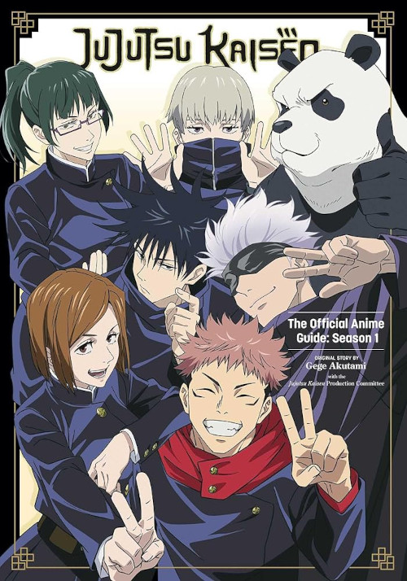

Jujutsu Kaisen:A trama segue Yuji Itadori, um estudante que, após encontrar e engolir um dedo amaldiçoado do poderoso espírito maligno Sukuna, ganha poderes amaldiçoados. Ele entra em uma escola de feiticeiros de jujutsu para aprender a controlar suas habilidades e enfrentar maldições perigosas, ao mesmo tempo que é caçado pelos aliados de Sukuna.
|  | Imagem referente à alguns personagens. |